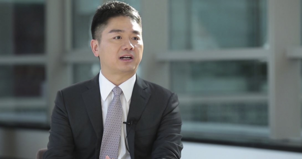

人们常用“尔虞我诈”来形容这个时代下的商业竞争。然而有这么一个人，在浮躁喧嚣的时代中始终保存着那份“真”。他对商业坚守诚信，对自我坚持真诚。带着这份“真性情”，京东集团CEO刘强东做客了《改变世界：中国杰出企业家管理思想访谈录》与知名媒体人秦朔倾心相谈： 是什么原因让他走出农村老家下海经商？又是什么让他坚定自建物流，不惜力排众议？是什么让他震怒，又是什么让他牵挂？人工智能会给人类生活和商业带来哪些颠覆性改变？京东又将 怎样推开这个新时代的大门？
京东集团CEO刘强东:

以下为刘强东与秦朔对话节选：
人工智能火遍全球，虽然应用场景还不丰富，但几乎所有大型的互联网企业均已重兵进入。人工智能与电商结合会产生什么化学反应？“零售“、“购物”的概念将怎样被改写？京东将走向何方？
秦朔：我看到以前有一些报道，说某种意义上你也是京东最重要的技术专家？
刘强东：那时候我们库存管理系统、财务管理系统，包括供货商的管理系统，都是我一个人写的，因为那时候业务很简单。所以从我的角度来说，我并不认为是多么高深的技术。但是未来12年，京东集团要全面向技术转型。 我们要用12年的时间，让技术驱动和支撑我们今天所有的业务，主要有两方面，一个是自动化，第二个是人工智能。
秦朔：过去给人的印象老说京东重，京东有10万大军将来可能有更多的大军，现在为什么又走到了这样一个新的模式里面呢？
刘强东：因为随着人工智能、云计算等新技术的成熟和普及，我绝对坚信，再次见到AlphaGo的时候，无人能够打败它，在这种情况下，我觉得把人工智能技术嫁接到我们的商业和技术上去，已经变得可行了。
秦朔：对于我们这样的用户来讲，可能意味着什么？
刘强东：意味着你将进一步地缩短购物的时间。随着我们无人车大范围部署以后，消费者购物不再需要留任何地址，比如你在北京，在飞机起飞之前你可以在京东下一个订单，买一瓶香水，你飞到了上海跟朋友去逛街，我们凭借人工智能技术就能够计算到在什么时间、哪个最佳结合点，通过无人车把香水送给你，可能那时你正跟朋友喝茶呢，无人车就悄无声息地跑到你身边，把香水给你了，甚至都不需要支付。
秦朔：听起来像个童话一样的。你估计还有几年能实现呢？
刘强东：12年之内，京东要把刚才描绘的所有场景全部实现。在技术创新方面，在三到五年的时间，京东会为这个国家和社会交出一份令大家满意的答案，就像我们过去12年在传统电商上取得的成功一样，我们会重新证明自己，我们不仅仅只是能够把电商做成功，我们同样可以把金融做得很成功，我们还可以把技术创新做得更成功。
秦朔：我听你描述的场景，突然觉得这可能是结构性供给侧改革的最佳样本，它极大地减少了各种浪费、低效，让它进行最恰当资源的匹配。
刘强东：咱们中国提出共产主义，过去很多人都觉得共产主义遥不可及，但是通过这两三年我们的技术布局，我突然发现其实共产主义真的在我们这一代就可以实现。因为机器人把你所有的工作做了，已经创造了巨大的财富，人类可以享受，或者可以做点艺术性的、哲学上的东西。国家可以将财富分配给所有人，没有穷人和富人之分。
即将步入第二个12年的京东，一路走来，坎坷却不失坚定，这个出生蓬门的孩子为何能一路成长为行业标杆，收获消费者与合作伙伴的一致信任？在一次又一次转折中，刘强东的内心独白是怎样的？
秦朔：从非典到2004年全面转型以后，似乎京东上了一个快车道，在这个过程中引进了风险资本，我们那时候在媒体上也经常说京东的资金链很紧张，有巨额的亏损等等，这个过程中你是不是也承受了很大的压力？
刘强东：到了2001年的时候，其实我对整个经营的思路已经很清晰了，我觉得最重要的就是，跟今天一样：用户体验、成本、效率。这三件事情可以说是全世界所有商业的核心和本质。如果能把这三者做到最好，我觉得已经能够为这个行业创造巨大的价值。我的商业信条永远就是：只要你的商业模式能够解决社会问题、能够创造价值，你就一定能获得成功，成功是早晚的事情。这就是信仰，有很深的信仰，所以我可以等5年、10年，我无所谓。
秦朔：到2008年开始做物流的时候，大家会去想说这是因为刘强东要赌一把，还是说刘强东手里有了很多的钱？
刘强东：什么是商业模式？就是如何赚钱，很简单。所以我投资物流的时候，我也做过详细的测算，我坚信我做了物流之后，成本不但不会上升反而会下降，所以我才决定自己自建物流。这一点是外界很多人不可以理解的。
秦朔：在上市以后，当时大家觉得电商未来的高增长还会有一个很漫长的趋势，但是没有想到接下来，比如说你们又搞了生鲜、金融、技术，方方面面，今天的布局跟当年给人的印象，京东只是个电商，又完全不一样了，新的业务发展是怎么规划和设计的？
刘强东：其实都很自然的，京东没有跨过界，因为金融也是建立在电商基础之上的，我们过去电商之所以能有很好的用户体验，很低的成本，很高的效率，其实都是建立在技术基础上的，如果没有很好的运营技术，我们根本做不到的。所以技术是业务的支撑体系，是基础，它支撑我们两大业务板块，一个是电商，一个是金融，金融也包含保险。
秦朔：让你来描述一下中国的零售市场，因为有了京东，出现了哪些更本质性的改变？
刘强东：在京东关注用户体验以后，无数的互联网公司也把用户体验放在首位，可以说京东是互联网行业中第一个大规模提出并彻底贯彻用户体验这个概念的。第二是行业成本，中国社会化物流成本占整个国家GDP达到17%-18%，而日本只有5%-6%，所以中国有大量传统企业的利润都被社会化物流成本给侵蚀掉，利润率就没了，而京东是第一次把整个中国社会化物流成本降低了70%，把过去达到100天的库存，现在压缩到了只有30多天，提高了两倍以上，这都是京东过去多少年来给整个行业带来的价值。
截至目前，京东员工数量已超11万，在这个庞大的家庭里，作为“大家长”的刘强东，对员工的关爱细致入微。在他心里，京东人是什么样的角色？在管理与温度之间，他又会做出怎样的权衡？
秦朔：你从你自己18年的成长来看，你觉得这个管理能力，如果说最早是1.0的话，现在是经历了几个阶段，达到了一个什么样的感觉呢？
刘强东：1.0版本的时候，强调的是全员销售，整个都是销售型组织。到了2.0版本的时候，强调系统流程，到了3.0版本的时候，就是从去年开始提出来，强调的是授权。中国社会环境很特殊，授权也带来了很多的风险，比如说贪污腐败，这是很严重的问题。
秦朔：对，最近我们发现了很多互联网公司，包括百度等等，都加大了打击内部这种腐败力度。
刘强东：是，我们大概两周之前（2016年10月24日）实名公布了内部腐败案件，公布之后公司股价跌了，我们的IR受到很大的压力，写了好几封邮件说投资人都恐慌了。为什么？因为在美国，如果发现公司有10名员工贪污，那说明这个公司已经烂到家了。但是在中国如果不能够抓到腐败的员工，这公司管理才是烂到家了。授权是一种信任，如何在充分授权的同时打击腐败，这两者之间存在一种平衡。
秦朔：你跟你的员工从一开始给我们的印象就像一个大家庭。
刘强东：对，我觉得这种文化是骨子里面了，因为我们从农村出来，农民的生活方式从小就是家在一块的，永远在一起的。
秦朔：你现在对一线的了解还会非常准确吗？会不会慢慢地也有这种大企业病，或者官僚主义的东西会滋生？
刘强东：多少会有，以前基层有一点事情，我第二天就能知道，但现在有时候要经过很长时间我才知道。比如说前段时间我去参观（宿迁）员工宿舍，最早盖宿舍大楼的时候，我已经明确跟同事说，希望给员工盖的是高级白领公寓。结果现在宿舍快装修好了，有一间样板间，我进去看，他竟然给我弄了个八人间。我就问为什么？他说老板你三四年前提的需求，现在我们员工人数已经是过去四五倍了，一个宿舍住两个人，住不下了，只能一个宿舍8个人才能住得下。他这是一种思考，要让每个人都有宿舍住，但是他忘记以人为本，住不下可以再租，我们要让员工活得有尊严。所以我要求把这个样版间留着，叫“耻辱间”，这是我们管理人员一个耻辱，你并没有把我们员工真正放在心上。
从中关村的小柜台到如今的京东，刘强东始终有着自己的坚守。他率性自我、朴实强悍又成熟理性，他独特的人格备受外界瞩目。早年的经历对他有哪些影响？在本我、自我和管理者之间，他是如何平衡的？ 对于自己，他又有怎样的评价？
秦朔：最早创业的时候，听说你家里不是很支持，那个时候是什么样的情况？
刘强东：我最早创业的时候其实就是因为外婆身体不好，她每天都要吃药、要去输液，但是全家都是农村的，舅舅、姨家里面粮食都卖了也是不够，当时就只是想能够赶紧赚点钱，有足够的钱给外婆治病。
秦朔：你觉得这样的一些经历，对你此后创业究竟意味着什么呢？
刘强东：我觉得给我带来最大的烙印就是做事永远要脚踏实地、农民式的脚踏实地，就像农民在地里干活，永远是一步一步把稻子播下去，走的时候收走，从来不想走什么捷径，快速的致富方式等等，都不会有。
秦朔：有人说刘强东是一个很轴的人，也有人说刘强东很率性，你怎么看待这一类对于你的性格，以及你的性格在公司管理上的一些非议呢？
刘强东：你刚才的形容我觉得还挺到位的。我有两条线，一条线就是本我、自我这条线，我希望我永远不改变，永远是10年、20年前的刘强东，我60岁还要简单，随意，随性；第二是管理这条线，这是很冷冰很理性的东西，我必须要不断地进步、不断地成熟、不断地学习。我觉得这两条线并不冲突，不代表你作为一个理性的、成熟的企业家，就一定要变得老奸巨滑、老油条一样，你的性格要是改变了，对人对事的看法、对世界的认知也就改变了，我希望两者都能保持得很好。
文章来源：网络快讯 2017-02-20